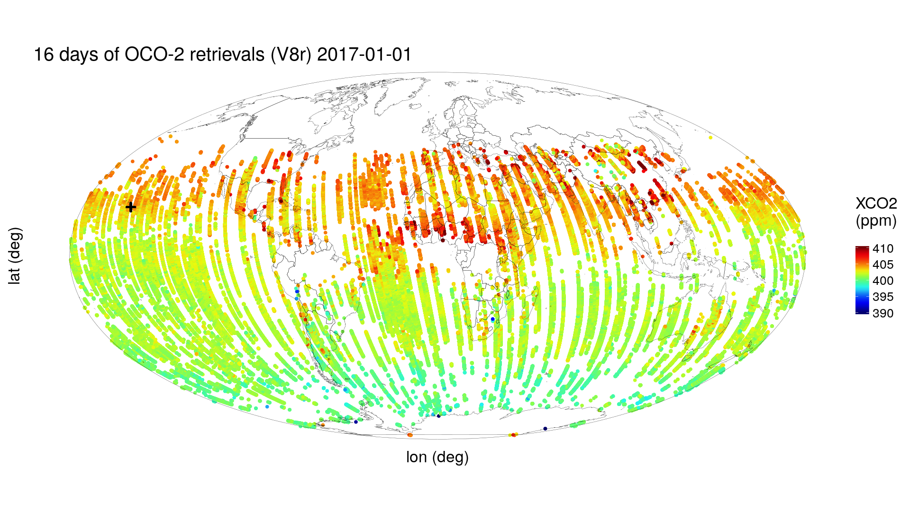

1 Introduction to Spatio-Temporal Statistics
“I feel all things as dynamic events, being, changing, and interacting with each other in space and time even as I photograph them.”
— Wynn Bullock (1902–1975), American photographer
Wynn Bullock was an early pioneer of modern photography, and this quote captures the essence of what we are trying to get across in our book — except in our case the “photographs” are fuzzy and the pictures are incomplete! The top panel of Figure 1.1 shows the July 2014 launch of the US National Aeronautics and Space Administration (NASA) Orbiting Carbon Observatory-2 (OCO-2) satellite, and the bottom panel shows the photographer in action. OCO-2 reached orbit successfully and, at the time of writing, is taking pictures of the dynamic world below. They are taken every fraction of a second, and each “photograph” is made up of measurements of the sun’s energy in selected spectral bands, reflected from Earth’s surface.
After NASA processes these measurements, an estimate is obtained of the fraction of carbon dioxide (CO\(_2\)) molecules in an atmospheric column between Earth’s surface and the OCO-2 satellite. The top panel of Figure 1.2 shows these estimates in the boreal winter at locations determined by the geometry of the satellite’s 16-day repeat cycle (the time interval after which the satellite retraces its orbital path). (They are color-coded according to their value in units of parts per million, or ppm.) Plainly, there are gaps caused by OCO-2’s orbit geometry, and notice that the higher northern latitudes have very few data (caused by the sun’s low angle at that time of the year). The bottom panel of Figure 1.2 shows 16 days of OCO-2 data obtained six months later, in the boreal summer, where the same comments about coverage apply, except that now the higher southern latitudes have very few data. Data incompleteness here is a moving target in both space and time. Furthermore, any color-coded “dot” on the map represents a datum that should not be totally believed, since it is an estimate obtained from measurements made through 700 km of atmosphere with clouds, water vapor, and dust getting in the way. That is, there is “noise” in the data.


There is a “+” on the global maps shown in Figure 1.2, which marks the location of the Mauna Loa volcano, Hawaii. Near the top of this volcano, at an altitude of 4.17 km, is the US National Oceanic and Atmospheric Administration (NOAA) Mauna Loa Observatory, which has been taking monthly measurements of CO\(_2\) since the late 1950s. The data are shown as a time series in Figure 1.3. Now, for the moment, put aside issues associated with measurements being taken with different instruments, on different parcels of air, at different locations, and for different blocks of time; these can be dealt with using quite advanced spatio-temporal statistical methodology found in, for example, Cressie & Wikle (2011). What is fundamental here is that underlying these imperfect observations is a spatio-temporal process that itself is not perfectly understood, and we propose to capture this uncertainty in the process with a spatio-temporal statistical model.

(Credit: Scripps Institution of Oceanography and NOAA Earth System Research Laboratory.)
The atmospheric CO\(_2\) process varies in space and in time, but the extent of its spatio-temporal domain means that exhaustive measurement of it is not possible; and even if it were possible, it would not be a good use of resources (a conclusion you should find evident after reading our book). This is a generic problem in spatio-temporal statistics—our noisy data traverse different paths through the “space-time cube”, but we want to gain knowledge about unobserved (and even observed) parts of it. We shall address this problem in the chapters, the Labs, and the technical notes that follow, drawing on a number of data sets introduced in Chapter 2.
Humans have a longing to understand their place (temporally and spatially) in the universe. In an Einsteinian universe, space and time interact in a special, “curved” way; however, in this book our methodology and applications are for a Newtonian world. Rick Delmonico, author of The Philosophy of Fractals (Delmonico, 2017), has been quoted elsewhere as saying that “light is time at maximum compression and matter is space at maximum compression.” Our Newtonian world is definitely more relaxed than this! Nevertheless, it is fascinating that images of electron motion at a scale of \(10^{-11}\) meters look very much like images of the cosmos at a scale of \(10^{17}\) meters (Morrison & Morrison, 1982).
Trying to understand spatio-temporal data and how (and ultimately why) they vary in space and time is not new — just consider trying to describe the growth and decline of populations, the territorial expansion and contraction of empires, the spread of world religions, species (including human) migrations, the dynamics of epidemics, and so on. Indeed, history and geography are inseparable. From this “big picture” point of view, there is a complex system of interacting physical, biological, and social processes across a range of spatial/temporal scales.
How does one do spatio-temporal statistics? Well, it is not enough to consider just spatial snapshots of a process at a given time, nor just time-series profiles at a given spatial location—the behavior at spatial locations at one time point will almost certainly affect the behavior at nearby spatial locations at the next time point. Only by considering time and space together can we address how spatially coherent entities change over time or, in some cases, why they change. It turns out that a big part of the how and why of such change is due to interactions across space and time, and across multiple processes.
For example, consider an influenza epidemic, which is generally in the winter season. Individuals in the population at risk can be classified as susceptible (S), infected (I), or recovered (R), and a well-known class of multivariate temporal models, called SIR models, capture the transition of susceptibles to infecteds to recovereds and then possibly back to susceptibles. At a micro level, infection occurs in the household, in the workplace, and in public places due to the interaction (contact) between infected and susceptible individuals. At a macro level, infection and recovery rates can be tracked and fitted to an SIR model that might also account for the weather, demographics, and vaccination rates. Now suppose we can disaggregate the total-population SIR rates into health-district SIR rates. This creates a spatio-temporal data set, albeit at a coarse spatial scale, and the SIR rates can be visualized dynamically on a map of the health districts. Spatio-temporal interactions may then become apparent, and the first steps of spatio-temporal modeling can be taken.
Spatio-temporal interactions are not limited to similar types of processes nor to spatial and temporal scales of variability that seem obvious. For example, El Niño and La Niña phenomena in the tropical Pacific Ocean correspond to periods of warmer-than-normal and colder-than-normal sea surface temperatures (SST), respectively. These SST “events” occur every two to seven years, although the exact timing of their appearance and their end is not regular. But it is well known that they have a tremendous impact on the weather across the globe, and weather affects a great number of things! For example, the El Niño and La Niña events can affect the temperature and rainfall over the Midwest USA, which can affect, say, the soil moisture in the state of Iowa, which would likely affect corn production and could lead to a stressed USA agro-economy during that period. Simultaneously, these El Niño and La Niña events can also affect the probability of tornado outbreaks in the famed “tornado alley” region of the central USA, and they can even affect the breeding populations of waterfowl in the USA.
Doing some clever smoothing and sharp visualizations of the spatial, temporal, and spatio-temporal variability in the data is a great start. But the information we glean from these data analyses needs to be organized, and this is done through models. In the next section, we make the case for spatio-temporal models that are statistical.
1.1 Why Should Spatio-Temporal Models Be Statistical?
In the physical world, phenomena evolve in space and time following deterministic, perhaps “chaotic,” physical rules (except at the quantum level), so why do we need to consider randomness and uncertainty? The primary reason comes from the uncertainty resulting from incomplete knowledge of the science and of the mechanisms driving a spatio-temporal phenomenon. In particular, statistical spatio-temporal models give us the ability to model components in a physical system that appear to be random and, even if they are not, the models are useful if they result in accurate and precise predictions. Such models introduce the notion of uncertainty, but they are able to do so without obscuring the salient trends or regularities of the underlying process (that are typically of primary interest).
Take, for instance, the raindrops falling on a surface; to predict exactly where and when each drop will fall would require an inconceivably complex, deterministic, meteorological model, incorporating air pressure, wind speed, water-droplet formation, and so on. A model of this sort at a large spatial scale is not only infeasible but also unnecessary for many purposes. By studying the temporal intensity of drops on a regular spatial grid, one can test for spatio-temporal interaction or look for dynamic changes in spatial intensity (given in units of “per area”) for each cell of the grid. The way in which the intensity evolves over time may reveal something about the driving mechanisms (e.g., wind vectors) and be useful for prediction, even though the exact location and time of each incident raindrop is uncertain.
Spatio-temporal statistical models are not at odds with deterministic ones. Indeed, the most powerful (in terms of predictive performance) spatio-temporal statistical models are those that are constructed based on an understanding of the biological or physical mechanisms that give rise to spatio-temporal variability and interactions. Hence, we sometimes refer to them as physical-statistical models (see the editorial by Kuhnert, 2014), or generally as mechanistically motivated statistical models. To this understanding, we add the reality that observations may have large gaps between them (in space and in time), they are observed with error, our understanding of the physical mechanisms is incomplete, we have limited knowledge about model parameters, and so on. Then it becomes clear that incorporating statistical distributions into the model is a very natural way to solve complex problems. Answers to the problems come as estimates or predictions along with a quantification of their uncertainties. These physical-statistical models, in the temporal domain, the spatial domain, and the spatio-temporal domain, have immense use in everything from anthropology to zoology and all the “ologies” in-between.
1.2 Goals of Spatio-Temporal Statistics
What are we trying to accomplish with spatio-temporal data analysis and statistical modeling? Sometimes we are just trying to gain more understanding of our data. We might be interested in looking for relationships between two spatio-temporally varying processes, such as temperature and rainfall. This can be as simple as visualizing the data or exploring them through various summaries (Chapter 2). Augmenting these data with scientific theories and statistical methodologies allows valid inferences to be made (Chapter 3). For example, successive reports from the United Nations Intergovernmental Panel on Climate Change have concluded from theory and data that a build-up of atmospheric CO\({_2}\) leads to a greenhouse effect that results in global warming. Models can then be built to answer more focused questions. For example, the CO\({_2}\) data shown in Figure 1.2 are a manifestation of Earth’s carbon cycle: can we find precisely the spatio-temporal “places” on Earth’s surface where carbon moves in and out of the atmosphere? Or, how might this warming affect our ability to predict whether an El Ni~no event will occur within 6 months?
Broadly speaking, there are three main goals that one might pursue with a spatio-temporal statistical model: (1) prediction in space and time (filtering and smoothing); (2) inference on parameters; and (3) forecasting in time. More specific goals might include data assimilation, computer-model emulation, and design of spatio-temporal monitoring networks. These are all related through the presence of a spatio-temporal statistical model, but they have their own nuances and may require different methodologies (Chapters 4 and 5).
1.2.1 The Two Ds of Spatio-Temporal Statistical Modeling
There have been two approaches to spatio-temporal statistical modeling that address the goals listed above. These are the “two Ds” referred to in the title of this subsection, namely the descriptive approach and the dynamic approach. Both are trying to capture statistical dependencies in spatio-temporal phenomena, but they go about it in quite different ways.
Probably the simplest example of this is in time-series modeling. Suppose that the dependence between any two data at different time points is modeled with a stationary first-order autoregressive process (AR(1)). Dynamically, the model says that the value at the current time is equal to a “propagation factor” (or “transition factor”) times the value at the previous time, plus an independent “innovation error.” This is a mechanistic way of presenting the model that is easy to simulate and easy to interpret.
Descriptively, the same probability structure can be obtained by defining the correlation between two values at any two given time points to be an exponentially decreasing function of the lag between the two time points. (The rate of decrease depends on the AR(1) propagation factor.) Viewing the model this way, it is not immediately obvious how to simulate from it nor what the behavior of the correlation function means physically.
The “take-home” message here is that, while there is a single underlying probability model common to the two specifications, the dynamic approach has some attractive interpretable features that the descriptive approach does not have. Nevertheless, in the absence of knowledge of the dynamics, it can be the descriptive approach that is more “fit for purpose.” With mean and covariance functions that are sufficiently flexible, a good fit to the data can be obtained and, consequently, the spatio-temporal variability can be well described.
1.2.2 Descriptive Modeling
The descriptive approach typically seeks to characterize the spatio-temporal process in terms of its mean function and its covariance function. When these are sufficient to describe the process, we can use “optimal prediction” theory to obtain predictions and, crucially, their associated prediction uncertainties. This approach has a distinguished history in spatial statistics and is the foundation of the famed kriging methodology. (Cressie, 1990, presents the early history of kriging.) In a spatio-temporal setting, the descriptive approach is most useful when we do not have a strong understanding of the mechanisms that drive the spatio-temporal phenomenon being modeled. Or perhaps we are more interested in studying how covariates in a regression are influencing the phenomenon, but we also recognize that the errors that occur when fitting that relationship are statistically dependent in space and time. That is, the standard assumption given in Chapter 3, that errors are independent and identically distributed (\(iid\)), is not tenable. In this case, knowing spatio-temporal covariances between the data is enough for statistically efficient inferences (via generalized least squares) on regression coefficients (see Chapter 4). But, as you might suspect, it can be quite difficult to specify all possible covariances for complex spatio-temporal phenomena (and, for nonlinear processes, covariances are not sufficient to describe the spatio-temporal statistical dependence within the process).
Sometimes we can describe spatio-temporal dependence in a phenomenon by including in our model covariates that capture spatio-temporal “trends.” This large-scale spatio-temporal variability leaves behind smaller-scale variability that can be modeled statistically with spatio-temporal covariances. The descriptive approach often relies on an important statistical characteristic of dependent data, namely that nearby (in space and time) observations tend to be more alike than those far apart. In spatial modeling, this is often referred to as “Tobler’s first law of geography” Tobler (1970), and it is often a good guiding principle. It is fair to point out, though, that there are exceptions: there might be “competition” (e.g., only smaller trees are likely to grow close to or under bigger trees as they compete over time for light and nutrients), or things may be more alike on two distant mountain peaks at the same elevation than they are on the same mountain peak at different elevations.
It is important to take a look back at the writings of the pioneers in statistics and ask why spatio-temporal statistical dependencies were not present in early statistical models if they are so ubiquitous in real-world data. Well, we know that some people definitely were aware of these issues. For example, in his ground-breaking treatise on the design of experiments in agriculture, R. A. Fisher (Fisher (1935), p. 66) wrote:
“After choosing the area we usually have no guidance beyond the widely verified fact that patches in close proximity are commonly more alike, as judged by the yield of crops, than those which are further apart.”
In this case, the spatial variability between plots is primarily due to the fact that the soil properties vary relatively smoothly across space at the field level. Unfortunately, Fisher could not implement complex error models that included spatial statistical dependence due to modeling and computational limitations at that time. So he came up with the brilliant solution of introducing randomization into the experimental design in order to avoid confounding plot effects and treatment effects (but note, only at the plot scale). This was one of the most important innovations in twentieth-century science, and it revolutionized experimentation, not only in agriculture but also in industrial and medical applications. Readers interested in more details behind the development of spatial and spatio-temporal statistics could consult Chapter 1 of Cressie (1993) and Chapter 1 of Cressie & Wikle (2011), respectively.
1.2.3 Dynamic Modeling
Dynamic modeling in the context of spatio-temporal data is simply the notion that we build statistical models that posit (either probabilistically or mechanistically) how a spatial process changes through time. It is inherently a conditional approach, in that we condition on knowing the past, and then we model how the past statistically evolves into the present. If the spatio-temporal phenomenon is what we call “stationary,” we could take what we know about it in the present (and the past) and forecast what it will look like in the future.
Building spatio-temporal models using the dynamic approach is closer to how scientists think about the etiology of processes they study – that is, most spatio-temporal data really do correspond to a mechanistic real-world process that can be thought of as a spatial process evolving through time. This connection to the mechanism of the process allows spatio-temporal dynamic models a better chance to establish answers to the “why” questions (causality) – is this not the ultimate goal of science? Yet, there is no free lunch – the power of these models comes from established knowledge about the process’s behavior, which may not be available for the problem at hand. In that case, one might specify more flexible classes of dynamic models that can adapt to various types of evolution, or turn to the descriptive approach and fit flexible mean and covariance functions to the data.
From a statistical perspective, dynamic models are closer to the kinds of statistical models studied in time series than to those studied in spatial statistics. Yet, there are two fundamental differences between spatio-temporal statistical models that are dynamic, and the usual multivariate time-series models. The first is that dynamic spatio-temporal models have to represent realistically the kinds of spatio-temporal interactions that take place in the phenomenon being studied – not all relationships that one might put into a multivariate time-series model make physical (or biological or economic or \(\ldots\)) sense. The second reason has to do with dimensionality. It is very often the case in spatio-temporal applications that the dimensionality of the spatial component of the model prohibits standard inferential methods. That is, there would be too much “multi” if one chose a multivariate time-series representation of the phenomenon. Special care has to be taken as to how the model is parameterized in order to obtain realistic yet parsimonious dynamics. As discussed in Chapter 5, this has been facilitated to a large extent by the development of basis function expansions within hierarchical statistical models.
Irrespective of which “D” is used to model a spatio-temporal data set, its sheer size can overwhelm computations. Model formulations that use basis functions are a powerful way to leap-frog the computational bottleneck caused by inverting a very large covariance matrix of the data. The general idea is to represent a spatio-temporal process as a mixed linear model with known covariates whose coefficients are unknown and non-random, together with known basis functions whose coefficients are unknown and random (Chapters 4 and 5). Usually the basis functions are functions of space and their coefficients define a multivariate time series of dependent random vectors. Depending on the type of basis functions considered, this formulation gives computational advantages due to reduced dimensions and/or sparse covariance/precision matrices that facilitate or eliminate the need for matrix inversions.
There are many classes of basis functions to choose from (e.g., Fourier, wavelets, bisquares) and many are multi-resolutional, although physically based functions (e.g., elevation) can easily be added to the class. If the basis functions are spatial and their random coefficients depend only on time, then the temporal dependence of the coefficients can capture complex spatio-temporal interactions. These include phenomena for which fine spatial scales affect coarse spatial scales and, importantly, vice versa.
1.3 Hierarchical Statistical Models
We believe that we are seeing the end of the era of constructing marginal-probability-based models for complex data. Such models are typically based on the specification of likelihoods from which unknown parameters are estimated. However, these likelihoods can be extremely difficult (or impossible) to compute when there are complex dependencies, and they cannot easily deal with the reality that the data are noisy versions of an underlying real-world process that we care about.
An alternative way to introduce statistical uncertainty into a model is to think conditionally and build complexity through a series of conditional-probability models. For example, if most of the complex dependencies in the data are due to the underlying process of interest, then one should model the distribution of the data conditioned on that process (data model), followed by a model of the process’ behavior and its uncertainties (process model). There will typically be unknown parameters present, in both the statistical model for the data (conditioned on the process) and the statistical model for the process. %How to deal with those parameters will be discussed below.
When a dynamic model of one or several variables is placed within a hierarchical model formulation (see below), one obtains what has been historically called a state-space model in the time-series literature. That is, one has data that are collected sequentially in time (i.e., a time series), and they are modeled as “noisy” observations of an underlying state process evolving (statistically) through time. These models are at the core of a number of engineering applications (e.g., space missions), and the challenge is to find efficient approaches to perform inference on the underlying state process of interest while accounting for the noise.
In general, there are three such situations of interest when considering state-space models: smoothing, filtering, and forecasting. Smoothing refers to inference on the hidden state process during a fixed time period in which we have observations throughout the time period. (The reader might note that this is the temporal analog of spatial prediction on a bounded spatial domain.) Now consider a time period that always includes the most current time, at which the latest observation is available. Filtering refers to inference on the hidden state value at the most current time based on the current and all past data. The most famous example of filtering in this setting is a methodology known widely as the Kalman filter Kalman (1960). Finally, forecasting refers to inference on the hidden state value at any time point beyond the current time, where data are either not available or not considered in the forecast. In this book, instead of modeling the evolution of a single variable or several variables, we model entire spatial processes evolving through time, which often adds an extra layer of modeling complexity and computational difficulty. Chapter 5 discusses how basis-function representations can deal with these difficulties.
In addition to uncertainty associated with the data and the underlying spatio-temporal process, there might be uncertainties in the parameters. These uncertainties could be accounted for statistically by putting a prior distribution on the parameters. To make sense of all this, we use hierarchical (statistical) models (HMs), and follow the terminology of Berliner (1996), who defined an HM to include a data model, a process model, and a parameter model. Note 1.1 gives the conditional-probability structure that ties these models together into a coherent joint probability model of all the uncertainties. The key to the Berliner HM framework is that, at any level of a spatio-temporal HM, it is a good strategy to put as much of the dependence structure as possible in the conditional-mean specification in order to simplify the conditional-covariance specification.
When the parameters are given prior distributions (i.e., a parameter model is posited) at the bottom level of the hierarchy, then we say that the model is a Bayesian hierarchical model (BHM). A BHM is often necessary for complex-modeling situations, because the parameters themselves may exhibit quite complex (e.g., spatial or temporal) structure. Or they may depend on other covariates and hence could be considered as processes in their own right. In simpler models, an alternative approach is to estimate the parameters present in the top two levels in some way using the data or other sources of data; then we like to say that the hierarchical model is an empirical hierarchical model (EHM). When applicable, an EHM may be preferred if the modeler is reluctant to put prior distributions on parameters about which little is known, or if computational efficiencies can be gained.
It is clear that the BHM approach allows very complex processes to be modeled by going deeper and deeper in the hierarchy, but at each level the conditional-probability model can be quite simple. Machine learning uses a similar approach with its deep models. A cascade of levels, where the processing of output from the previous level is relatively simple, results in a class of machine-learning algorithms known as deep learning. A potential advantage of the BHM approach over deep learning is that it provides a unified probabilistic framework that allows one to account for uncertainty in data, model, and parameters.
A very important advantage of the data–process–parameter modeling paradigm in an HM is that, while marginal-dependence structures are difficult to model directly, conditional-dependence structures usually come naturally. For example, it is often reasonable to assume that the data covariance matrix (given the corresponding values of the hidden process) is simply a diagonal matrix of measurement-error variances. This frees up the process covariance matrix to capture the “pure” spatio-temporal dependence, ideally (but, not necessarily) from physical or mechanistic knowledge. Armed with these two covariance matrices, the seemingly complex marginal covariance matrix of the data can be simply obtained. This same idea is used in mixed-effects modeling (e.g., in longitudinal data analysis), and it is apparent in the spatio-temporal statistical models described in Chapters 4 and 5.
The product of the conditional-probability components of the HM gives the joint probability model for all random quantities (i.e., all “unknowns”). The HM could be either a BHM or an EHM, depending on whether, respectively, a prior distribution is put on the parameters (i.e., a parameter model is posited) or the parameters are estimated. (A hybrid situation arises when some but not all parameters are estimated and the remaining have a prior distribution put on them.) In this book, we are primarily interested in obtaining the (finite-dimensional) distribution of the hidden (discretized) spatio-temporal process given the data, which we call the predictive distribution. The BHM also allows one to obtain the posterior distribution of the parameters given the data, whereas the EHM requires an estimate of the parameters. Predictive and posterior distributions are obtained using Bayes’ Rule (Note 1.1).
Since predictive and posterior distributions must have total probability mass equal to 1, there is a critical normalizing constant to worry about. Generally, it cannot be calculated in closed form, in which case we rely on computational methods to deal with it. Important advances in the last 30 years have alleviated this problem by making use of Monte Carlo samplers from a Markov chain whose stationary distribution is the predictive (or the posterior) distribution of interest. These Markov chain Monte Carlo (MCMC) methods have revolutionized the use of HMs for complex modeling applications, such as those found in spatio-temporal statistics.
First, the fundamental notion of the law of total probability allows one to decompose a joint distribution into a series of conditional distributions: \({[A,B,C] = [A\mid B,C][B\mid C][C]}\), where the “bracket notation” is used to denote probability distributions; for example, \([A,B,C]\) is the joint distribution of random variables \(A\), \(B\), and \(C\), and \([A \mid B, C]\) is the conditional distribution of \(A\) given \(B\) and \(C\).
Mark Berliner’s insight (Berliner, 1996) was that one should use this simple decom-posi-tion as a way to formulate models for complex dependent processes. That is, the joint distribution, [data, process, parameters], can be factored into three levels.
At the top level is the data model, which is a probability model that specifies the distribution of the data given an underlying “true” process (sometimes called the hidden or latent process) and given some parameters that are needed to specify this distribution. At the next level is the process model, which is a probability model that describes the hidden process (and, thus, its uncertainty) given some parameters. Note that at this level the model does not need to account for measurement uncertainty. The process model can then use science-based theoretical or empirical knowledge, which is often physical or mechanistic. At the bottom level is the parameter model, where uncertainty about the parameters is modeled. From top to bottom, the levels of a BHM are:
\[ \begin{aligned} 1.\quad & \text{Data model:} &\quad [\text{data} \mid \text{process, parameters}] \\ 2.\quad & \text{Process model:} &\quad [\text{process} \mid \text{parameters}] \\ 3.\quad & \text{Parameter model:} &\quad [\text{parameters}] \end{aligned} \] Importantly, each of these levels could have sub-levels, for which conditional-probability models could be given.
Ultimately, we are interested in the posterior distribution, [process, parameters \(\mid\) data] which, conveniently, is proportional to the product of the levels of the BHM given above:
\[ \begin{aligned} ~[\text{process, parameters} \mid \text{data}] \;\propto\; & [\text{data} \mid \text{process, parameters}] \\ & \times\; [\text{process} \mid \text{parameters}] \\ & \times\; [\text{parameters}], \end{aligned} \]
where “\(\propto\)” means “is proportional to.” (Dividing the right-hand side by the normalizing constant, [data], makes it equal to the left-hand side.) Note that this result comes from application of Bayes’ Rule, applied to the hierarchical model. Inference based on complex models typically requires numerical evaluation of the posterior (e.g., MCMC methods), because the normalizing constant cannot generally be calculated in closed form.
An empirical hierarchical model (EHM) uses just the first two levels, from which the predictive distribution is
\[ \begin{aligned} ~[\text{process} \mid \text{data, parameters}] \;\propto\; & [\text{data} \mid \text{process, parameters}] \\ & \times\; [\text{process} \mid \text{parameters}], \end{aligned} \]
where parameter estimates are substituted in for “parameters.” Numerical evaluation of this (empirical) predictive distribution is also typically needed, since the EHM’s normalizing constant cannot generally be calculated in closed form.
1.4 Structure of the Book
The remaining chapters in this book are arranged in the way that we often approach stat-ist-ical modeling in general and spatio-temporal modeling in particular. That is, we begin by exploring our data. So, Chapter 2 gives ways to do this through visualization and through various summaries of the data. We note that both of these types of exploration can be tricky with spatio-temporal data, because we have one or more dimensions in space and one in time. It can be difficult to visualize information in more than two dimensions, so it often helps to slice through or aggregate over a dimension, or use color, or build animations through time. Similarly, when looking at numerical summaries of the data, we have to come up with innovative ways to help reduce the inherent dimensionality and to examine dependence structures and potential relationships in time and space.
After having explored our data, it is often the case that we would like to fit some fairly simple models – sometimes to help us do an initial filling-in of missing observations that will assist with further exploration, or sometimes just to see if we have enough covariates to adequately explain the important dependencies in the data. This is the spirit of Chapter 3, which presents some ways to do spatial prediction that are not based on a statistical model or are based on very basic statistical models that do not explicitly account for spatio-temporal structure (e.g., linear regression, generalized linear models, and generalized additive models).
If the standard models presented in Chapter 3 are not sufficient to accomplish the goals we gave in Section 1.2, what are we to do? This is when we start to consider the descriptive and dynamic approaches to spatio-temporal modeling discussed above. The descriptive approach has been the “workhorse” of spatio-temporal statistical modeling for most of the history of the discipline, and these methods (e.g., kriging) are described in Chapter 4. But, as mentioned above, when we have strong mechanistic knowledge about the underlying process and/or are interested in complex prediction or forecasting scenarios, we often bene-fit from the dynamic approach described in Chapter 5. Take note that Chapters 4 and 5 will require a bit more patience to go through, because process models that incorporate statistical dependence require more mathematical machinery. Hence, in these two chapters, the notation and motivation will be somewhat more technical than for the models presented in Chapter 3. It should be kept in mind, though, that the aim here is not to make you an expert, rather it is to introduce you (via the text, the Labs, and the technical notes) to the motivations, main concepts, and practicalities behind spatio-temporal statistical modeling.
After building a model, we would like to know how good it is. There are probably as many ways to evaluate models as there are models! So, it is safe to say that there is no standard way to evaluate a spatio-temporal statistical model. However, there are some common approaches that have been used in the past to carry out model evaluation and model comparison, some of which apply to spatio-temporal models (see Chapter 6). We note that the aim there is not to show you how to obtain the “best” model (as there isn’t one!). Rather, it is to show you how a model or a set of models can be found that does a reasonable job with regard to the goals outlined in Section 1.2.
Last, but certainly not least, each of Chapters 2–6 contain Lab vignettes that go through the implementation of many of the important methods presented in each chapter using the R~programming language. This book represents the first time such a comprehensive collection of R~examples for spatio-temporal data have been collected in one place. We believe that it is essential to “get your hands dirty” with data, but we recognize that quite a few of the methods and approaches used in spatio-temporal statistics can be complicated and that it can be daunting to program them yourself from scratch. Therefore, we have tried to identi-fy some useful (and stable) R~functions from existing R~packages (see the list following the appendices) that can be used to implement the methods discussed in Chapters 2–6. We have also put a few functions of our own, along with the data sets that we have used, in the R~package, STRbook, associated with this book (instructions for obtaining this package are available at https://spacetimewithr.org. We note that there are many other R~packages that implement various spatio-temporal methods, whose approaches could arrive at the same result with more or less effort, depending on familiarity. As is often the case with R,~ one gets used to doing things a certain way, and so most of our choices are representative of this.